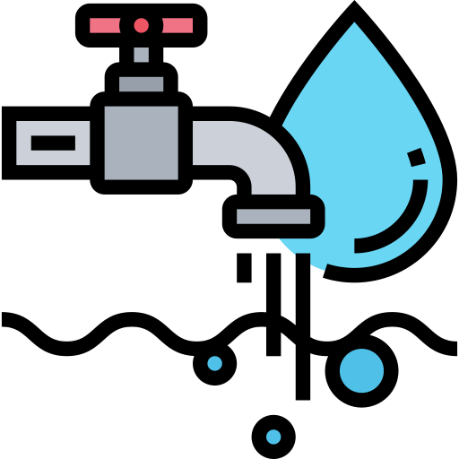
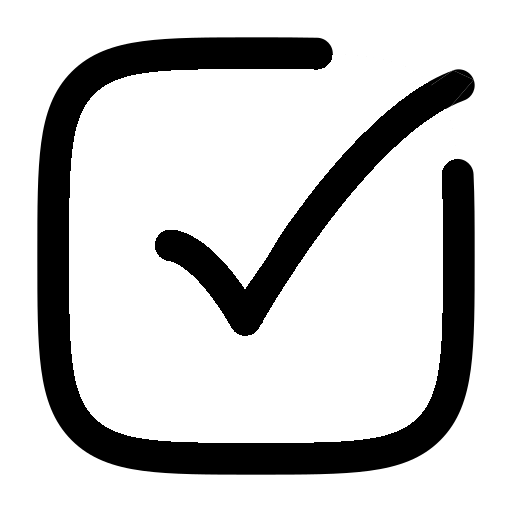

Preventable WASH diseases are costing Kenya lives and money.
14%
of children under five had diarrhoea in the past two weeks
KDHS 2022
23,000
premature deaths a year from diarrhoeal disease, including 17,100 children under five
World Bank WSP
KSh 27bn
lost every year to poor sanitation, 0.9% of GDP
World Bank WSP
12,120
cholera cases across 27 counties, October 2022 to October 2023
WHO
VORA
Complete WASH for healthier lives.
02
Institutions carry the risk but lack the support.
Scattered supply
Water, sanitation and hygiene items come from many vendors with uneven quality.
Broken or empty facilities
Stations without soap or water, and no maintenance after installation.
No guidance or education
No help meeting health standards, and practices do not change.
Only 29% of Kenyans have basic sanitation, and just 25% have handwashing facilities with soap and water at home.
UNICEF Kenya
VORA
Complete WASH for healthier lives.
03
One partner for all of WASH.
Certified products and services on one account, one invoice, one reliable delivery day.
Installation • Maintenance • Resupply • WASH checks
Water
Drinking water, treatment, storage
Sanitation
Toilet hygiene, waste, disinfection
Hygiene
Stations, soap, tissue, menstrual products
VORA
Complete WASH for healthier lives.
04
Products and services that keep institutions healthy.

WaterDrinking water, dispensers, treatment, filters, tanksSanitationToilet hygiene supplies, sanitary and waste bins, disinfection
HygieneHygiene stations, soap, sanitiser, tissue, menstrual products

WASH ChecksOn-site assessment with a written action reportInstallation and maintenanceSet-up and servicing of equipment
Scheduled resupplyFixed-day monthly or termly delivery
VORA
Complete WASH for healthier lives.
05
From first visit to lasting results.
1
2
3
4
5
WASH Check
On-site assessment, written report
Recommended solution
Costed plan across all three pillars
Installation
Equipment fitted and commissioned
Resupply and maintenance agreement
Fixed delivery day, scheduled servicing
Re-check and report
Measured change, renewed contract
Every customer becomes a recurring account.
VORA
Complete WASH for healthier lives.
06
A large, recurring market on our doorstep.
1,243
health facilities in Nairobi
307
secondary schools in Nairobi
424,891
primary school learners in Nairobi
Kenya
35,570 primary · 10,752 secondary schools
35,570 primary · 10,752 secondary schools
Nairobi verified market
1,550 institutions ≈ KES 310M a year
1,550 institutions ≈ KES 310M a year
Year 3 target
120
accounts
Ministry of Education; Kenya Master Health Facility List
07
Recurring revenue with low capital needs.
Five revenue streams
Two of the five streams recur every month, which is what makes the account base compound.
1
Consumables and resupply
Recurring
2
Maintenance contracts
Recurring
3
Installations
One-off
4
WASH checks
One-off
5
Branded products
Project
Unit economics, school account
40 recurring accounts is 2.6% of verified Nairobi institutions. Planning model, validated through pilot.
First-year contributionKES 82,000
Cost to acquireKES 10,000
Return in year oneabout 8×
Break-even40 accounts
VORA
Complete WASH for healthier lives.
08
Proof, not promises.
ADVANTAGE
PROOF POINT
VERIFIABLE BY
Complete WASH
Water, sanitation and hygiene on one account
Catalogue and invoices
Certified quality
Only KEBS-certified products
KEBS permit list
Reliability
Fixed delivery days, 95% on-time target
Delivery logs
Resilience
Two or more suppliers per category
Supplier register
Results
Before-and-after data in partner schools
Impact reports
VORA
Complete WASH for healthier lives.
09
VORA
FOUNDATION
Facilities work when people know how to use them.
Communities where every child grows up healthy through good water, sanitation and hygiene practices, and no girl is held back from learning.
WASH education
Menstrual health education
School WASH clubs
Teacher training

65% of Kenyan women and girls cannot afford sanitary pads.
World Bank / GWSP
10
Our path to scale.
Months 1–3
Set-up
Registration, suppliers, survey of 50 institutions
Months 4–6
Pilot
Ten accounts running, model validated
Months 12–18
Break-even
40 recurring accounts
Years 2–3
Scale
Foundation school programme, 120 accounts, beyond Nairobi
KES 7.0M
Year 1
KES 19.7M
Year 2
KES 32.0M
Year 3
VORA
Complete WASH for healthier lives.
11
Healthier institutions, measurable results.
What we measure
Institutions with functional WASH facilities
On-time delivery and customer retention
Pupils and teachers reached
Change in observed WASH practices
Illness-related absence in partner schools
VORA
Complete WASH for healthier lives.
12
Two founders. Three advisers.
Managing Director
Strategy, partnerships and customer accounts
Operations Director
Sourcing, quality, installation and delivery
Advisers, serving in personal capacity
Public health
Programme design and health outcomes
WASH engineering
Facility standards and installation
Finance and law
Compliance, contracts and governance
VORA
Complete WASH for healthier lives.
13